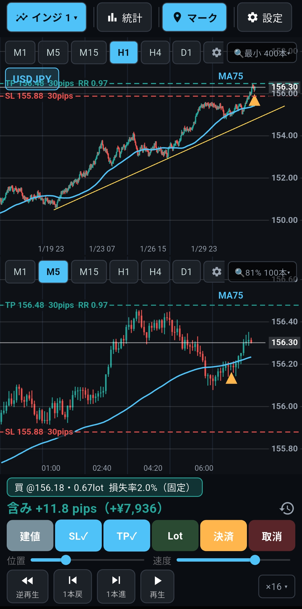
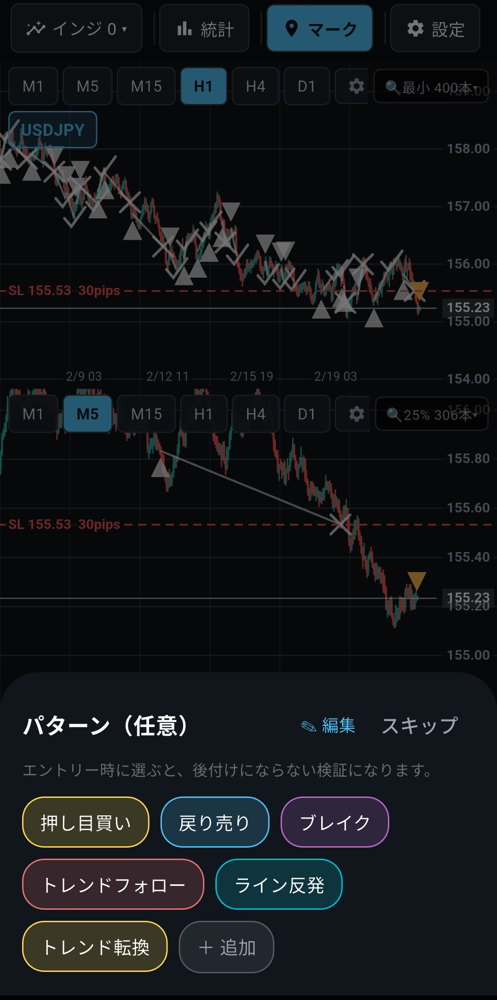
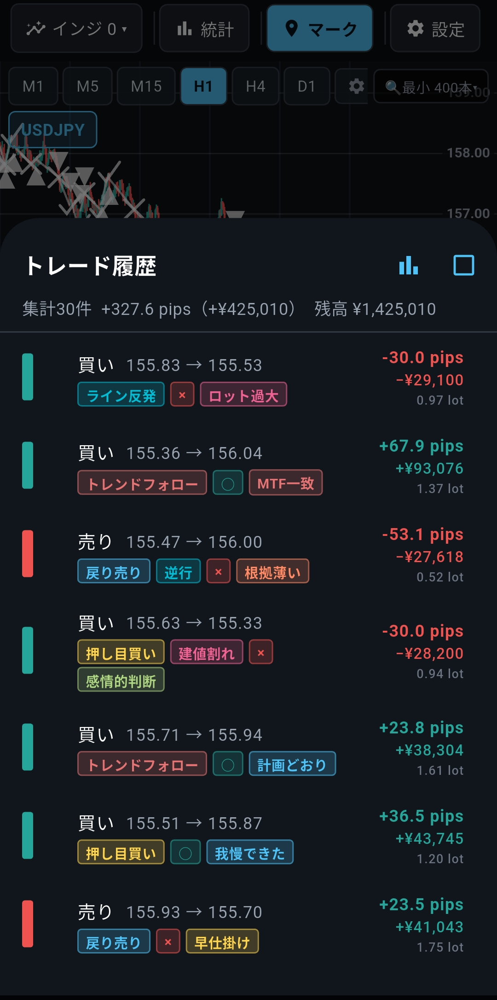
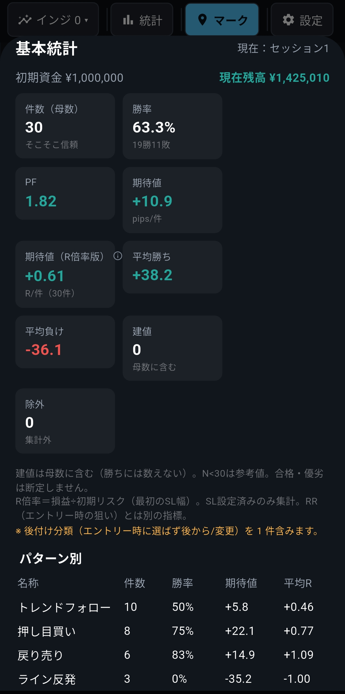
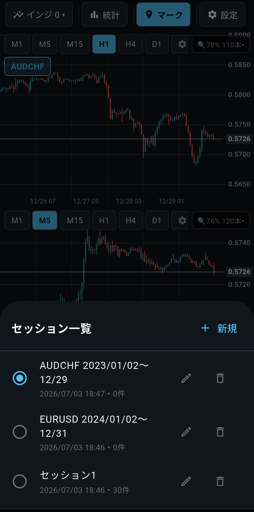
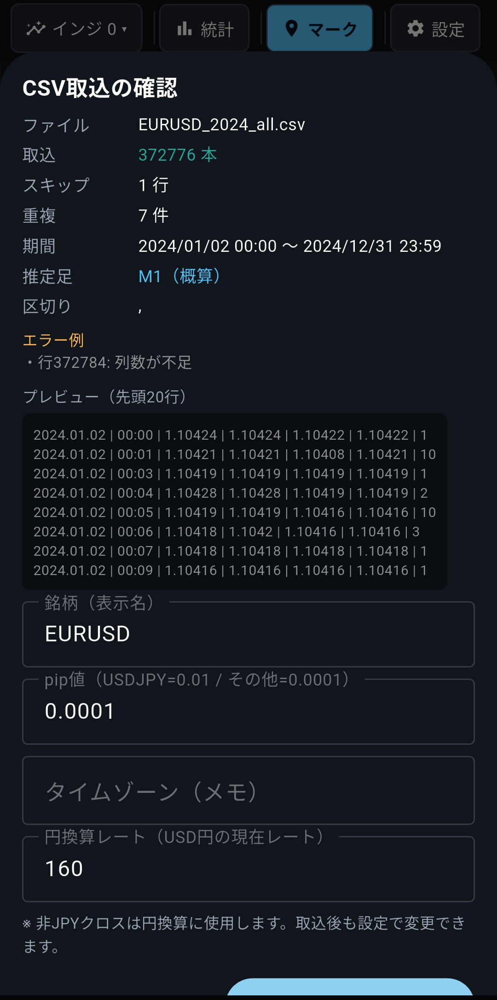

答えを見ずにローソク足を1本ずつ進めて、エントリーの理由と結果を記録。たまった記録は、パターン別の数字で振り返れます。
通勤中の数分からでも、少しずつ積み上げられます。

PCを開き、チャートを準備し、記録を残す。
その流れが重いと、検証はどうしても後回しになります。
PCを開くのが面倒で、結局やらない
机に向かう時間を、毎日は確保できない。
記録がノートやスクショに散らかる
あとで見返せず、同じ失敗を繰り返してしまう。
始めても、数日で止まってしまう
最初は頑張れても、いつの間にかやめている。
続かないのは、やる気のせいだけではありません。
準備と記録の手間が重すぎただけです。
本番に近い状態で練習する
今の位置より先のローソク足とインジケーターは表示しません。上位足と下位足の2画面を並べて、1本送り・自動再生・逆再生で判断の瞬間を再現できます。
あとから「なぜ入ったか」を思い出せる
自分で決めたチェック項目に答えてから発注します。「必須」にした項目は、答えるまで発注できません。パターン・損切りの理由・自己評価も、トレードごとに記録できます。

同じ場面を、何度でも
決済したトレードを一覧から選ぶと、エントリーから決済までを1画面に収めて見返せます。「注文時までやり直す」を選べば、注文の直前に戻って同じ場面をもう一度検証できます。

感覚ではなく、数字で
勝率・PF（プロフィットファクター）・pips期待値・平均リスクリワード・最大ドローダウン・平均保有時間などを、パターン別・損切りの理由別に自動で集計します。月ごとの推移も確認できます。

よく使うボタンは、親指が届く位置に
再生や描画のボタンは、チャートのすぐ下にまとめています。
線を動かすときは、指先まわりを拡大表示
ドラッグ中は、もう一方の画面に指の下のチャートを大きく映します。
「固定」で、うっかり触れても線が動かない
スクロールや拡大の最中に、引いた線を動かしてしまうのを防げます。
3つの画面の高さを、指で調整
上段・下段・オシレーターの境目をドラッグして、見やすい比率に変えられます。
描画ツール16種
水平線・トレンドライン・チャネル・フィボナッチ・リスクリワード測定など。
主要なインジケーターをひととおり
移動平均線・ボリンジャーバンド・一目均衡表・ZigZag、RSI・MACD・ストキャスティクス・RCI・ATR。
インストールしたら、まずデモで
練習用のデモデータですぐに操作を試せます。デモは合成データで、実在の相場ではありません。
ガイドツアーで、順番に案内
画面の要素を光らせながら、1つずつ操作を案内します。ヘルプと用語集もアプリの中にあります。
自分の相場は、CSVで取り込む
MT4・MT5から書き出したCSVに対応しています。相場データはアプリに含まれていません。
実際のアプリの画面です。開発中のため、表示が変わることがあります。


← 左右にスクロールできます →
通勤中に、数本だけ進める
PCを開かなくても、少しずつ検証を進められます。
気づいた理由を、その場で残す
エントリーの理由や損切りの理由を、忘れる前に記録できます。
週末に、パターン別の傾向を見返す
どの判断がどんな結果につながったか、記録から確認できます。
インジケーター・描画ツール・統計は、無料プランでもすべて使えます。
| 無料 | Pro | |
|---|---|---|
| 検証セッション | 3まで | 無制限 |
| トレード記録全セッション合計・デモは数えない | 20件 | 無制限 |
| オリジナル時間足 | — | ✓ |
| チャートの配色 | テンプレ5種 | カスタムも可 |
| トレード記録のCSV書き出し | — | ✓ |
| バックアップの書き出し・復元 | 無制限 | 無制限 |
| インジケーター・描画ツール・基本統計・CSV取込 | すべて | すべて |
Pro 月額
¥500／月（税込）
毎月自動で更新。いつでも解約できます。
Pro 買い切り
¥2,980（税込）
一度の購入でずっとPro。自動更新はありません。
価格は、購入時にGoogle Playで表示される金額が優先されます。
表示される統計は記録の集計であり、将来の成果を示すものではありません。
個人で開発している、FX検証用のAndroidアプリです。
こだわったのは、「先が見えない状態で判断すること」と、「あとから理由と結果を見返せること」です。派手な予測機能ではなく、地道な検証と記録を続けるための道具として作っています。
クローズドテストでいただいた声をもとに、1本送りの動き・ガイドツアー・線の操作などを直してきました。使いにくい点・分かりにくい画面を教えてくださる方を、引き続き募集しています。気づいたことは、アプリの「設定→フィードバック・問い合わせ」からお寄せください。
テストへの参加は無料です。登録したメールアドレス宛に、Google Playのテスト参加リンクをお送りします。
テスト参加のご案内をメールでお送りします。
ご登録ありがとうございます。
で受け付けました（ 登録）。
テスト参加のご案内メールを順次お送りします（すぐには届きません。今しばらくお待ちください）。
登録いただくのはメールアドレスのみです。送信をもって利用規約・プライバシーポリシーに同意いただいたものとします。
Androidのスマートフォンに対応しています。iOS版は今のところありません。
付いていません。MT4・MT5から書き出したCSV（ローソク足のデータ）を取り込んで使います。取り込む前に、練習用のデモデータで操作を試せます。
MT4なら、対象の通貨ペア・時間足のチャートを開き、「ツール→ヒストリーセンター」（F2）から「エクスポート」で書き出せます。MT5のバー書き出しにも対応しています。書き出したCSVは、USB接続・Googleドライブ・自分宛のメールなどでスマホへ移し、アプリの「設定→CSV取込」から選びます。手順はアプリ内ヘルプ「自分の相場を取り込む（CSV）」にもまとめています。ヒストリカルデータの入手・利用は、各提供元の規約に従ってください。
検証セッションは3つまで、トレード記録は全セッション合計で20件まで無料です（デモのセッション・トレードは数えません）。インジケーター・描画ツール・基本統計・CSV取込・バックアップ・チャートの配色テンプレートは無料でも使えます。Proでは件数の上限がなくなり、オリジナル時間足・チャートの配色のカスタム・トレード記録のCSV書き出しも使えます。
月額は毎月自動で更新され、Google Playの「定期購入」からいつでも解約できます。解約すると次の更新日以降は請求されません（日割りの返金はありません）。買い切りは一度の購入でProが続き、自動更新はありません。月額から買い切りに切り替えるときは、Google Playで月額の定期購入を解約してください。
インストールと購入のときに必要です。検証・記録はオフラインでも使えます。
検証の記録はスマホの中に保存されます（アプリ内購入のときだけ、購入の確認に必要な情報が決済管理サービスに送られます）。機種変更のときは、バックアップを書き出して新しい端末で復元してください。
ありません。本アプリは過去チャートを使った学習・検証・記録のためのツールです。投資助言、売買推奨、利益保証は行いません。
一般的なチャート分析ツールは、リアルタイムの相場分析が得意です。本アプリは、先の値動きを隠して1本ずつ検証し、エントリーの理由・損切りの理由・結果を記録して振り返ることに特化しています。
検証・記録・集計の機能はひととおり使えます。テスト中のため、不具合や表示・仕様の変更が起きることがあります。
1回の勝ち負けではなく、記録を重ねて自分の傾向を見る。そのための道具です。
登録いただくのはメールアドレスのみです。
Android対応・ダウンロード無料